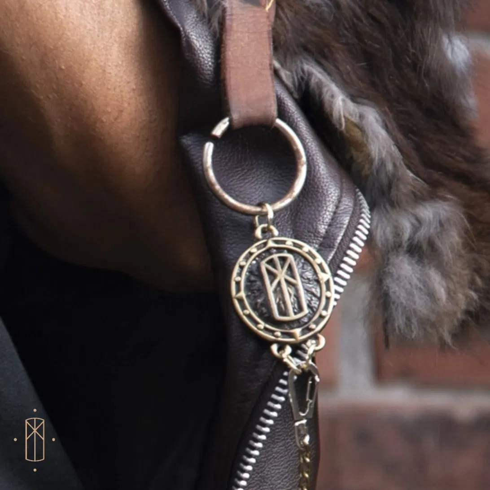

Hecho a mano en Guadalajara
Viste con ĐIGNIDAD
Kilts y faldas para caballero. Tela pesada, herrajes de latón y un patrón que aguanta el uso diario.

Broche Ingwaz
latón fundido a mano
A medida
·
Envíos a todo México
·
2 semanas de taller
El taller
La colección
Cinco piezas. Todas se cortan y se cosen aquí, a mano, sobre tu medida.
{{ p.sku }}
{{ p.ann1 }}
{{ p.ann1sub }}
{{ p.ann2 }}
{{ p.ann2sub }}
{{ p.name }}
{{ p.material }}
{{ p.price }}